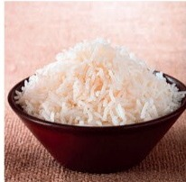
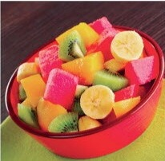
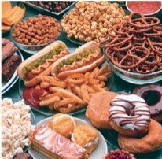
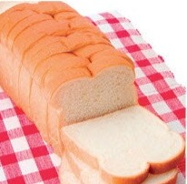
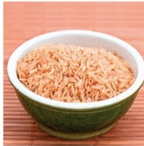
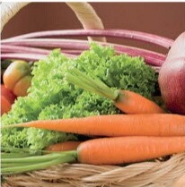
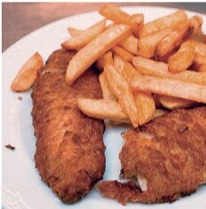
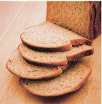

Are You a Healthy Eater? 🥦
- 🌍 A UNIVERSAL READING DECK — one chapter of Select Readings Elementary, one lesson flow, any pupil. The reading is a QUIZ — the class plays it, adds the score, reads the verdict.
- 🎒 Open with YOUR pupil's homework check first (2–3 minutes — chapter 1's homework: read aloud · the dictionary words · the research-a-sport talk — he is the teacher!). This deck starts only when chapter 1 is finished — where you stopped there is where it starts.
- 🎬 THE VIDEOS — a market walk (slide 3) · a healthy breakfast (slide 9) · junk food vs fresh (slide 11): click each once before the lesson. A clip that did not arrive shows its picture card — the lesson runs without it.
- 🎧 ONE AUDIO TRACK (5:15) — the whole quiz read aloud (slide 8). The question cuts (0:23–0:33 each) ride the eight quiz slides — one cut per question. Test the track once before the lesson; pause + scroll in the bottom bar.
- 🥦 THE FLOW: the quote → the food photos → the FOOD SCALE teach + game (the whole frequency family: never · hardly ever · once in a while · sometimes · often · frequently · usually · always) → the GROCERY ROUND (продукты) → previewing (the four kinds, illustrated) → listen first → the quiz PLAYED, one question per slide (8 slides, be honest!) → the score + the ladder → the reading → healthy do/don't → true/false → what do you think → vocabulary → adjectives & adverbs → the -ly machine → synonyms → the words shelf → the games (hangman · clocks + THE TREASURE · mime · the silly game · rank the foods) → write your own quiz → homework.
- 💎 THE TREASURE TASK rides the clocks slide (28): Anna's eight circled numbers — let the pupil DERIVE the total and the band.
- ⏱️ Time-your-reading card (slide 18): 440 words — the book's own fluency check.
- 📱 No race — where you stop is where the next lesson starts. One chapter = one or two lessons. A natural stop: after the score slide (17).
- ✍️ The lesson-log pill (top right / key N): the d: · //: rows + the free space; ⌘S = save + close; over http it auto-sends to the Mac inbox. The 🙋 Pardon pill (top left / P) = the class phrases.
ELENA'S FOOD STRIP IS IN: the p. 8 Vocabulary Preview (slide 3) — sliced into the eight food cards 📸
«The greatest wealth is health.»
💰
WEALTH
money, a lot of money — rich
❤️
HEALTH
when your body and mind feel good
Virgil says: health is worth more than money. 🤔 Do you agree?
Today's reading: a quiz on eating habits — are YOU a healthy eater?
What food can you see? 👀

study the pictures — read the eight words! 📖 (the book's own page)








🎬 The market walk — the clip plays in the lesson (your teacher has it!). Fresh fruit and fresh vegetables come from places like this! 🥕🍓
a real fruit & vegetable market · ~60 s
Talk! 🗣 Which of these foods do you eat every day?
Which do you eat… never? 🤔
next: the FOOD SCALE — the five words that answer "how often?"
now close your eyes 🙈 — tap a card and say the word!
How often? The scale 📏
Five words — one week each. Look: the circles are DAYS!
☕ Example — MY week with tea: 6 of 7 circles → «I usually drink tea.»
the whole family lives on the scale: never · hardly ever · rarely · sometimes · once in a while · often · frequently · usually · always · all the time — the quiz uses them ALL — spot them! 🔎
tap a step — say its sentence aloud!
Your week with these foods 🍽️
Tap a FOOD → tap YOUR step. The sentence builds itself!
➕ And the book asks: think of OTHER foods for your steps! 🍎🍕🥚 (say them aloud!)
At the grocery store 🛒
Tap a picture — say the word! Tap again — into YOUR basket 🧺
🛒 YOUR basket — tap 4 foods, then say:
🟢 «I always buy ___ and ___.» · 🟡 «I sometimes buy ___.»
🔴 «I never buy ___ — yuk!» 😄
the green ring = the food is IN your basket 🧺 (tap once more to take it out) · use the WHOLE family: usually, often, hardly ever…
Preview! 👀
🔎 PREVIEW = look BEFORE you read: the title, the pictures, the shape. Guess what is coming!
👁 Look quickly — five seconds!

the reading on p. 9 — what do you SEE? (letters? numbers? colours?)
1 → about eating habits (the foods tell you!) · 2 → it's a QUIZ! — questions, numbers, a score 🎯 You don't read it — you PLAY it!
the quiz page looks JUST like our peek — letters, numbers, a score box! 🕵️
Just listen! 👂
no reading yet — the foods tell the story · pause + scroll in the bottom bar · listen as many times as you need!
A · How often do you eat breakfast? 🍳
📜 THE QUIZ RULES: Be honest! Answer the way you REALLY eat — not the way you think you should eat. The number = your POINTS for that question!
🎬 A healthy breakfast — the clip plays in the lesson (your teacher has it!). What would YOU make? 🥣
a real healthy breakfast · ~60 s
B · How often do you snack on fruit and veg? 🍎
📸 A NEW WORD: snack on = eat something BETWEEN meals 🍎
say it in Russian first — then click! перекусывать

fresh fruit — the PERFECT snack 🍓 · 3 p.m. — not lunch time — snack time!
🔁 once in a while = sometimes — remember the scale! (2 green days of 7)
C · Do you eat junk food? 🍩
🎬 Junk food vs fresh food — the clip plays in the lesson (your teacher has it!). Which plate would YOU take? 🍩🥗
junk vs fresh · ~60 s
📘 hardly ever = almost never (once a month? once a year? — that's hardly ever!)
D · Do you eat quickly? 🏃🍽️
A meal is over in percent of the time!
type the number you hear (Enter ↵ checks) — then LOOK what 90 percent means:
9 plates of 10 — that's 90 percent! Nine meals fast, one meal slow 🏃
⚡ quickly = fast 🏃 · slowly = not fast 🐢 — the -ly words! (they return on slide 24)
E · How often do you skip meals? 🚫🍽️
📸 A NEW WORD: skip a meal = NOT eat a meal (no breakfast — "I skipped it!")
say it in Russian first — then click! пропускать еду
🍳 ❌ 🥪 ❌ 🍲 ❌
breakfast — SKIPPED · lunch — SKIPPED · dinner — SKIPPED!
the plate stays empty 😮
📘 frequently = often · rarely = hardly ever — two more scale words!
F · Do you eat just before bed? 🌙
🦉🍪🌙🛏️
just before = RIGHT before — ten minutes! Not an hour, not at dinner. 🕙
the owl and the night cookie — a midnight snacker! 😄
🗣 Talk: what is YOUR midnight snack — cookies? an apple? nothing? 🍪🍎🚫
G · Is your largest meal in the evening? 🍽️
largest = BIGGEST — which plate is it? 🤔
🥗
LUNCH
1 p.m.
🍲🍲🍲
DINNER
7 p.m.
here the largest meal is DINNER — in the EVENING!
🗣 Talk: in YOUR family — when is the BIG meal: lunch or dinner?
H · Brown rice or white rice? 🍚🍞
How often do you eat brown rice or wheat bread INSTEAD OF white rice or white bread?
📸 A NEW WORD: instead of = in place of — juice 🧃 instead of cola 🥤! · say it in Russian — then click: вместо
I eat … and … instead of white rice and white bread.
the two healthy twins are NOT written — click the right photos! 👇 (the white ones shake!)
🍚 Click the healthy twins!
brown rice + wheat bread land IN the sentence · the white twins just shake
📘 all the time = always — the quiz's last scale word!
Your score 🧮
Look at the numbers you circled and ADD THEM TOGETHER. The total is your score! (for each question, the number 4 is the healthiest answer)
your eight answers — in order A → H (the deck remembers your taps!):
Add them — my total is
the score ladder — 8 points is the lowest (all 1s), 32 is the top (all 4s)
the quiz's three little words — tap! 👇
snack on= to eat between meals skip a meal= to not eat a meal score= the points you get in a quizThe reading 📖
Are You a Healthy Eater?
How well do you eat? To find out, read each question below and circle the number of your answer. Be honest. Answer the way you really eat, not the way you think you should eat.
A. How often do you eat breakfast? 1 I never eat breakfast. · 2 I have breakfast once or twice a week. · 3 I eat breakfast 3–6 times a week. · 4 I eat breakfast every morning.
B. How often do you snack on fresh fruits and vegetables? 1 I never snack… · 2 …once in a while. · 3 …once a day. · 4 …more than once a day.
C. Do you eat junk food? 1 Yes, I often… · 2 Yes, I sometimes… · 3 No, I hardly ever… · 4 No, I never eat junk food.
D. Do you eat quickly? 1 Yes, I always… · 2 Yes, I eat quickly 90 percent of the time. · 3 Yes, I sometimes… · 4 No, I usually eat slowly.
E. How often do you skip meals? 1 I frequently… · 2 …about 3 times a week. · 3 I rarely… · 4 I never skip meals.
F. How often do you eat something just before you go to bed? 1 I always… · 2 I often… · 3 I rarely… · 4 I never eat just before I go to bed.
G. How often do you eat your largest meal in the evening? 1 I always… · 2 I frequently… · 3 I rarely… · 4 I never eat my largest meal in the evening.
H. How often do you eat brown rice or wheat bread instead of white rice or white bread? 1 I never… · 2 I sometimes… · 3 I usually… · 4 I eat brown rice or wheat bread all the time.
Your score: Look at the numbers you circled and add them together. The total is your score. (For each question on this quiz, the number 4 is the healthiest answer.)
32 — Congratulations! You have a perfect score. You are a healthy eater. · 26–31 — Good job! You eat very well. · 20–25 — Not bad, but you could eat better. · 14–19 — Oops! You aren't a healthy eater. Remember, fruits and vegetables are really good for you. Junk food isn't. · 8–13 — Oh no! You need to change the way you eat. Can you do it?
Healthy eaters… 🥗
Read the quiz again — what do healthy eaters DO? Fill the chart!
| Healthy eaters… ✅ | Healthy eaters don't… ❌ |
|---|---|
| eat breakfast every day | eat junk food |
| snack on fresh fruits and vegetables | eat quickly |
| eat slowly | skip meals |
| eat brown rice or wheat bread | eat just before they go to bed |
| never eat their largest meal in the evening | … |
True or false? ✅❌
Click the line — then say WHY! The false ones: make them TRUE!
What do YOU think? 💭
no keys here — these answers are YOURS 🗣 (full sentences!)
Choose the word! 🧩
2. I usually eat my biggest meal in the middle of the day.
3. I try to snack on fresh fruit when I get hungry between meals.
4. I usually eat a total of five small meals every day.
5. I know I should snack on fresh fruit instead of junk food.
say the word first — then click the gap to check
Adjective or adverb? 🎨🏎️
🟦 ADJECTIVE
describes a THING (a noun) — what kind?
fresh fruit · brown rice · a healthy eater · a quick meal
🟩 ADVERB
describes an ACTION (a verb) — how? · many end in -LY
eat quickly · skip rarely · cook professionally
Tap ADJECTIVE or ADVERB — say it with the word!
the pair is the point: a quick meal → we eat quickly · a slow eater → he eats slowly!
The -ly machine 🤖
🤖 Add -ly to an adjective → you get an ADVERB (how you do it!):
say the adverb first — then click to check!
Say it differently! 🔁
🔁 Rewrite with a synonym: one timefrequentlysometimeshardly ever
say the whole sentence aloud — then tap!
Words to remember 📚
Point — say the meaning — tap the word when you know it!
a word you don't know? Say it — it goes to your homework 📓
Save the mouse! 🐭
guess the word!
Food-day clocks 🕒
Tap the clock you hear!
⏰ THE CLOCK FAMILY: o'clock · half past · quarter past · quarter to (the minute hand on the NINE 🕘 = 15 minutes BEFORE)
today: the whole family, mixed — a food day from breakfast to the midnight snack!
Anna took the quiz. She circled 4, 4, 4, 4 — and 2, 2, 2, 2.
The best score of all is 32.
What is Anna's total? Which band is she in? 🤔
4+4+4+4 = 16 · 2+2+2+2 = 8 · 16+8 = 24 points! · 24 lives in 20–25: "Not bad, but you could eat better!" 📊
Mime it! 🎭
You mime — I say. Then swap! (the answer shows on the right)
The silly game 🃏
THE ANSWERS 👀
the questions hide until you deal — then read them, answer with THE chip on the screen! · tap the questions to clear
The healthiest of them all! 🏆
Put the eight foods in YOUR order: 1 = the healthiest … 8 = the least healthy!
🗣 Then say it: "Number one is … because …"
Write YOUR own quiz! ✍️🎯
The book's challenge: add answers to the health quiz. The best answer is number 4!
Then SWAP quizzes — ask YOUR questions to your partner! 🎤
Your homework 🏡
the words live on slide 26 (Words to remember)
The greatest wealth is health! ❤️
You played a whole quiz today — and you know your score. 🎯
And the old proverb says:
«An apple a day keeps the doctor away!» 🍎